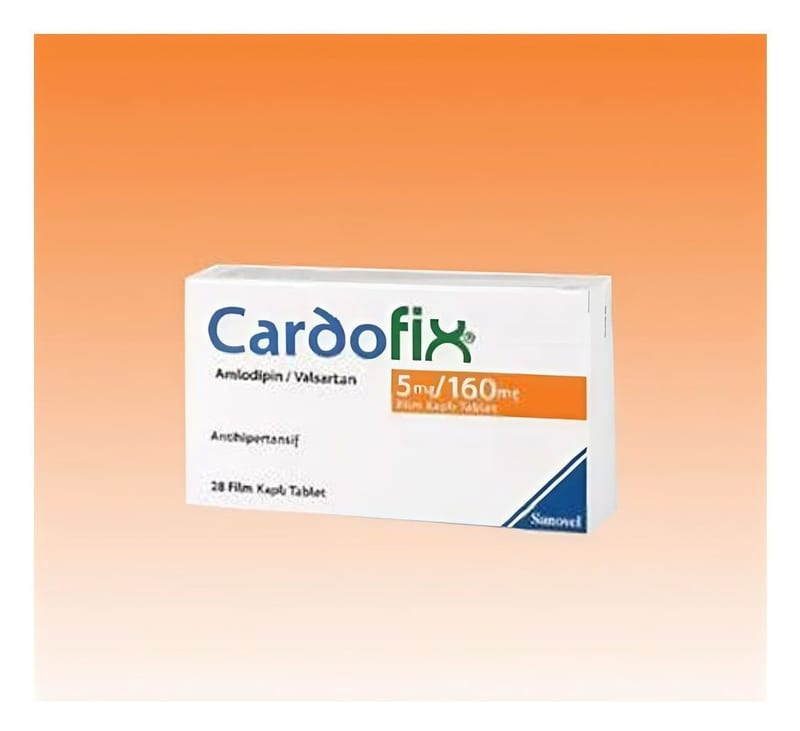

Cardofix 5 mg/80 mg Film Kaplı Tablet, Film Kaplı Tablet, 28 Adet

Ne için kullanılır
KT · Bölüm 1CARDOFİX, 28 adet film kaplı tablet içeren blister ambalajda takdim edilmektedir.
Sarı renkli, yuvarlak film kaplı tabletlerdir.
Her bir film kaplı tablet, 5 mg amlodipin ve 80 mg valsartan içerir.
CARDOFİX, kalsiyum kanal blokörleri sınıfına ait bir madde olan amlodipin ve anjiyotensin II reseptör antagonistleri sınıfına ait bir madde olan valsartan içerir. Bu maddelerin ikisi de yüksek kan basıncınızın (hipertansiyon) kontrol edilmesini sağlar. Amlodipin, damar düz kas hücrelerinin kalsiyum kanallarını bloke eder; bu da, kan damarlarının kasılmasını önler. Vücut tarafından üretilen bir madde olan anjiyotensin II, kan damarlarının büzülmesine neden olarak kan basıncını artırır. Valsartan, anjiyotensin II’nin etkisini bloke ederek etki eder. Bu iki mekanizma da kan damarlarınızı gevşetir ve kan basıncınızı düşürür.
CARDOFİX, kan basıncını düşüren tek başına amlodipin ya da valsartan içeren bir ilaç ile yeterince kontrol edilemeyen hastalarda, yüksek kan basıncının (hipertansiyonun) tedavi
edilmesi amacıyla kullanılır. Eğer, yüksek kan basıncı uzun süre devam ederse beyin, kalp ve böbreklerdeki kan damarlarını tahrip edebilir ve inmeye, kalp yetmezliğine ya da böbrek yetmezliğine yol açabilir. Kan basıncının normal düzeye düşürülmesi, bu bozuklukların ortaya çıkma riskini azaltır.